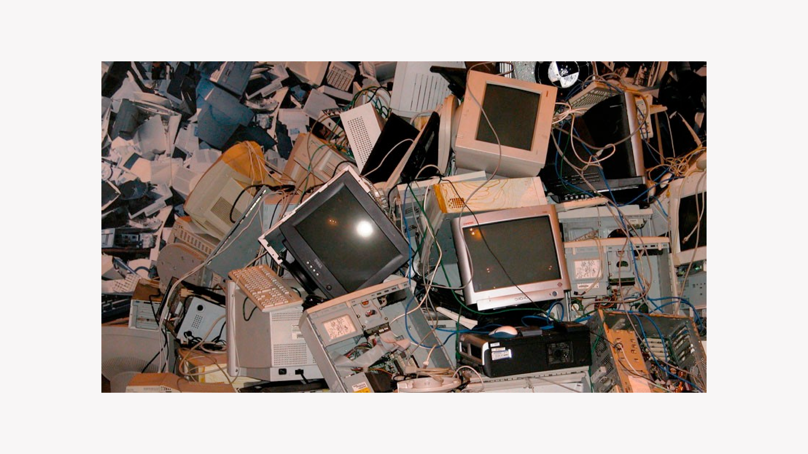

Reciclaje general del producto
¿Qué son los RAEE y dónde se deshechan?
Un RAEE es un residuo de aparato eléctrico o electrónico. Al estar compuestos por varios elementos, al ser mal deshechados puede que contaminen con metales pesados como el plomo, arsénico, mercurio y cadmio, entre otros.
Es por eso que, se considera necesario el previo desarme completo del producto antes de ser deshechado por completo.
Reciclaje por partes
 16.13.04.png)
Batería de litio
Las baterías de litio SON RECICLABLES aunque al ser una nueva tecnología cuesta mucho su proceso de reciclaje y al ser muy durables la mayoría siguen en uso.
 16.13.47.png)
Placa de circuito electrónico
Son reciclables; se hace mediante un proceso de separación electroestática. Se recuperan metales como el cobre, aluminio, estaño, oro. Plata, paladio, y otros componentes ferrosos.
 16.13.13.png)
Policarbonato
Su reciclado consta en moler los residuos de PC virgen y generar nuevos productos. Hoy en día mediante un proceso químico los productos de PC son aptos ya que se anula la aparición del Bisphenol A (BPA). Sin embargo, este proceso de reciclado actualmente es muy caro.
 16.13.30.png)
Aluminio
El reciclaje del aluminio solo emplea un 5% de la energía que consume generar aluminio virgen. En las plantas de reciclado, el aluminio se separa, se limpia y se prensa en grandes bloques, los cuales se llevan a fabricas donde lo funden y vuelvan a generar nuevos productos.
 16.13.22.png)
Cable de cobre + PVC
En cuanto al reciclaje, primero se tritura varias veces para obtener por separado lo mas que se pueda el plástico del metal; luego se lleva a una planta procesadora en la que se separa el PVC del cobre. Este ultimo se refunde mientras que el PVC se muele, se limpia de impurezas y se vuelve a introducir a un nuevo ciclo productivo en forma de grano o polvo.
 16.13.39.png)
TPU
Se puede reciclar de manera mecánica (se tritura y se usa para formar un nuevo producto) o químico (se descompone en sus componentes químicos y se utiliza para nuevas materias primas). Este material generalmente no se recicla.